10 部片单 · 恐怖 / 科幻 / 惊悚 / 悬疑 / 剧情
| # | 片名 | 类型 | 评分 / 状态 |
|---|---|---|---|
| 01 | 最后一次驱魔 | 恐怖 / 伪纪录片（美国 / 法国 · 一位牧师的最后一次驱魔） | 6.3 / 71% / 63 |
| 02 | 追击巨怪 | 奇幻 / 伪纪录片（挪威 · 一部不该被拍到的纪录片） | 6.1 / 83% / 61 |
| 03 | 墓地邂逅 | 恐怖 / 伪纪录片（加拿大 · 一档把自己锁进去的灵异节目） | 6.8 / 67%* / 33 |
| 04 | 超能失控 | 科幻 / 剧情（美国 · 一台从不离手的摄影机） | 7.0 / 85% / 69 |
| 05 | 致命录像带 | 恐怖 / 伪纪录片（美国 · 一柜子没人整理的录像带） | 6.7 / 56% / 54 |
| 06 | 欧罗巴报告 | 科幻 / 惊悚（美国 · 一艘回不了地球的飞船） | 6.9 / 81% / 68 |
| 07 | 解除好友 | 恐怖 / 惊悚（美国 · 一个退不出去的群聊） | 6.5 / 62% / 59 |
| 08 | 硬核亨利 | 动作 / 科幻（俄罗斯 / 美国 · 一双没有脸的眼睛） | 7.7 / 51% / 51 |
| 09 | 中邪 | 恐怖 / 伪纪录片（中国 · 一场不该被拍完的还人） | 7.0 / 未收录 / 未收录 |
| 10 | 灵媒 | 恐怖 / 伪纪录片（泰国 / 韩国 · 一位请错了神的灵媒） | 6.4 / 79% / 未收录 |
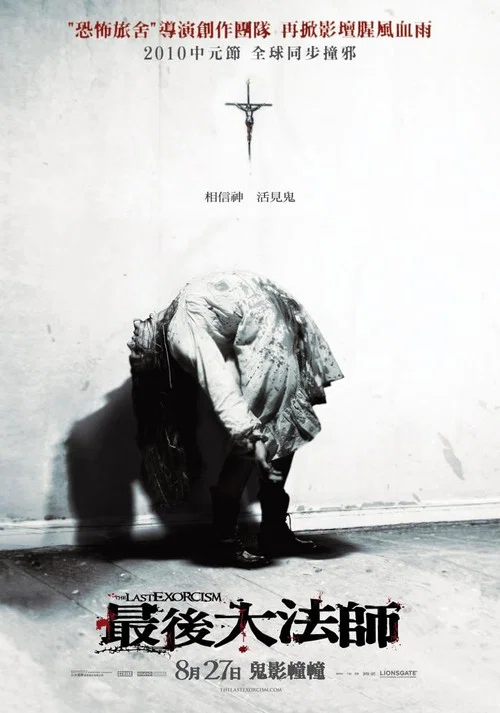
最后一次驱魔 The Last Exorcism
「这是最后一次。我保证。」
剧情梗概
路易斯安那。科顿·马库斯是个从小跟着父亲上台驱魔的牧师，他自己不信这一套——那些仪式是他养家的手艺。他请来一支摄制组，要拍一部揭穿驱魔骗局的纪录片。一封来自偏远农场的求助信成了他口中的「最后一次」：他带着摄影机去给农场主的女儿内尔做仪式，打算当场拆穿自己。结果他拆不掉。
亮点
- 德国导演丹尼尔·斯塔姆的长片处女作，此前他只拍过短片；伊莱·罗斯出任制片，剧本由哈克·博特科与安德鲁·格兰德写。
- 成本约 180 万美元，北美票房约 4100 万美元，全球约 6940 万美元——2010 年最赚钱的恐怖片之一。
- 全片用手持摄影机拍成，摄影机是叙事的一部分：科顿一边做仪式，一边对着镜头解释自己是怎么骗人的。
- 帕特里克·法比安演的科顿不是反派，他是个诚实的人——他真的以为这次也会像前面几十次一样收场。
- 阿什利·贝尔演的内尔几乎只出现在取景框里；她的表演是这部片唯一被各方影评一致肯定的部分。
- 豆瓣 6.3 / 烂番茄 71% / Metacritic 63 / IMDb 5.7：专业评价明显高于观众，争议几乎全在最后十分钟。
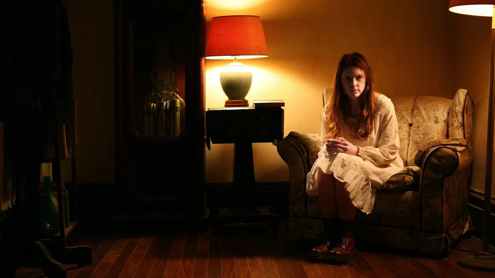
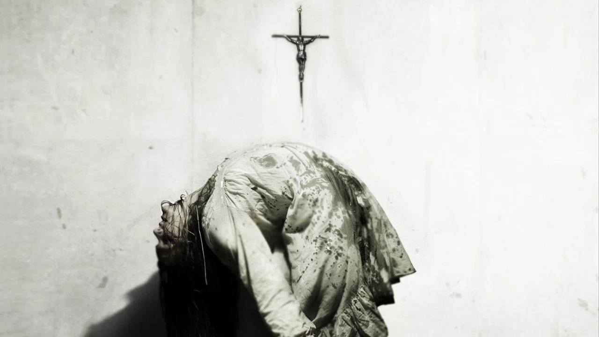
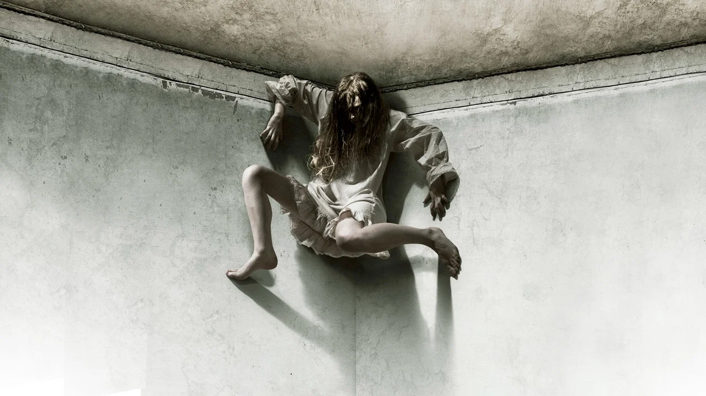
导演与主创 · 他们的历史作品
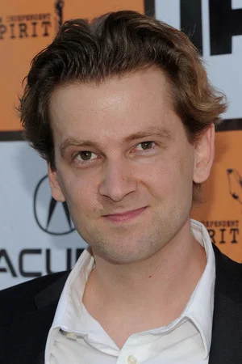
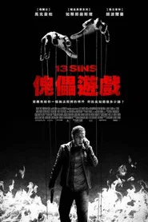
13骇人游戏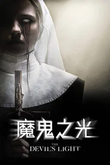
恶魔的光火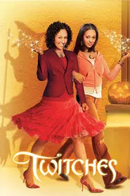
魔法双星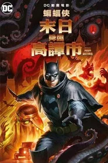
蝙蝠侠：哥谭厄运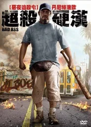
混蛋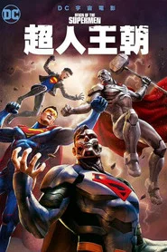
超人王朝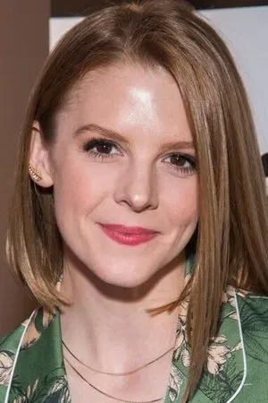
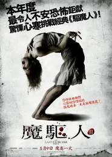
最后一次驱魔2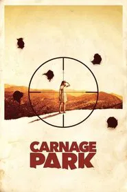
屠杀公园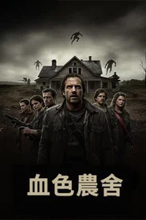
幸存日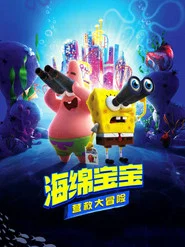
海绵宝宝：营救大冒险短评（轻微剧透）
轻微剧透：真正的转折不在「她是不是真的被附身」，而在科顿发现自己的那套把戏已经不管用了——他这次得真的做一个决定，而摄影机还在拍。轻微剧透：全片最狠的设计是「揭穿」这件事本身：前面半小时他把自己的伎俩一样样演示给镜头看，所以后面发生的事你没法用同一套逻辑解释。结尾那场火是全片唯一一次把摄影机丢下——而最后记录的画面，是有人把它捡起来继续拍。
为什么值得一看
想看「伪纪录片怎么把一个不信的人逼成信徒」的人；能接受手持镜头晃、中段节奏偏慢、结尾转向突兀的观众。PG-13，含惊吓与宗教恐怖画面，建议初中以上观看。内地未映，流媒体可看。看完想继续：《女巫布莱尔》《灵动：鬼影实录》《墓地邂逅》。
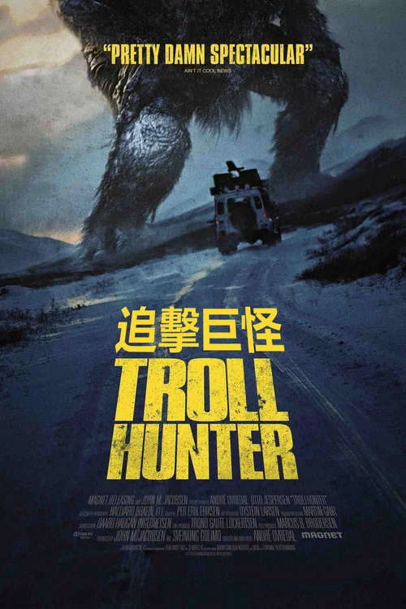
追击巨怪 Trollhunter
「那不是熊。」
剧情梗概
三个挪威学生带着一台摄影机去追拍盗猎熊的人，被对方赶走，又跟了上去。跟到最后他们发现，那个满嘴抱怨、开着房车到处跑的男人追的根本不是熊。他叫汉斯，他替政府干活，他追的东西在挪威地图上被高压线标着——那些电线不是为了输电，是为了把它们圈在里面。
亮点
- 安德烈·艾弗道夫自编自导，这是他的第二部长片；此后他拍了《无名女尸》与《在黑暗中讲述的恐怖故事》。
- 成本约 350 万美元，全球票房约 416 万美元；2012 年拿下 Fangoria 电锯奖最佳国际影片。
- 全片是手持摄影机拍的伪纪录片，巨怪第一次露脸被压在六十分钟之后——前面全是采访、开车和争吵。
- 巨怪的设计是这部片最被低估的部分：三头、石头皮肤、以石为食、怕紫外线；特效大量依赖实拍模型与真景，而不是纯电脑画面。
- 时任挪威首相在片尾以本人身份出镜，被拍得像真的一样——这是全片最好笑的一个笑话。
- 豆瓣 6.1 / 烂番茄 83% / Metacritic 61 / IMDb 6.9：本期华语观众与欧美影评落差最大的一部，华语观众嫌它慢，欧美影评把它当类型片惊喜。
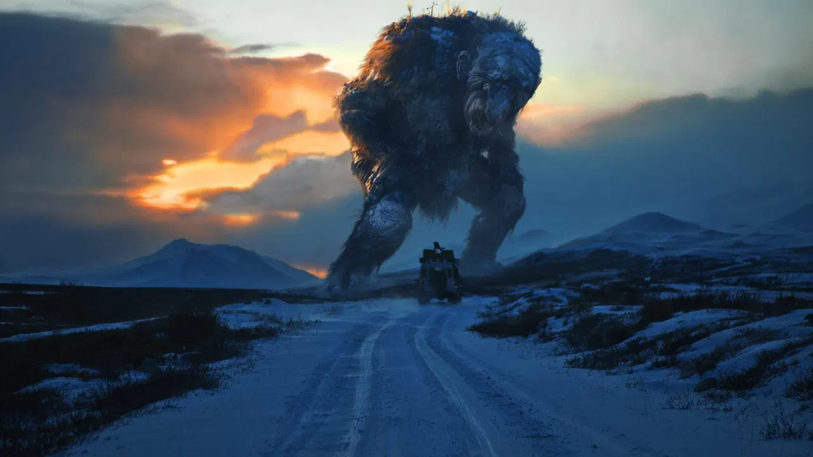
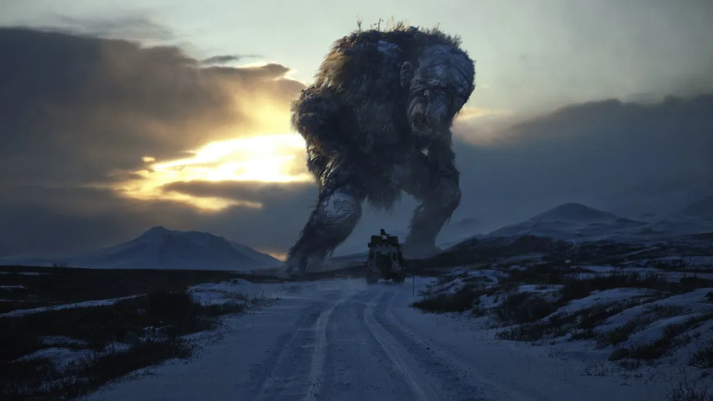
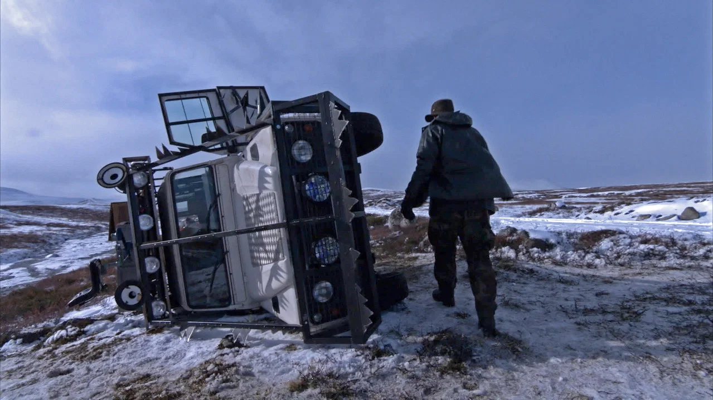
导演与主创 · 他们的历史作品

 无名女尸
无名女尸 在黑暗中讲述的恐怖故事
在黑暗中讲述的恐怖故事 得墨忒耳号的最后航程
得墨忒耳号的最后航程 超能追缉
超能追缉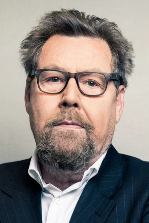
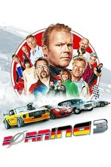
赛车狂人3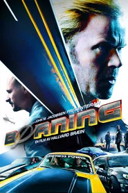
赛车狂人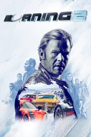
赛车狂人2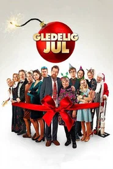
又一个快乐圣诞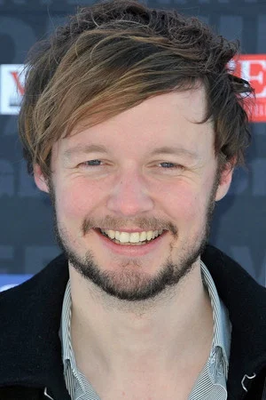
短评（轻微剧透）
轻微剧透：真正的转折在他们第一次看见巨怪的那一刻——不是它有多大，而是它怕光。前面那些看似闲笔的抱怨、高压线、政府官员，全都是为这一条规则做的铺垫。轻微剧透：艾弗道夫把北欧神话拍成了一份公务员工作：汉斯不是英雄，是个累坏了的中年人，在给一群不肯听话的动物收拾烂摊子。结尾摄影机的下落，是这部片最后一个冷笑话。
为什么值得一看
想看「怪物片怎么被拍成纪录片」的人；能接受前半段铺垫长、笑点是冷幽默、特效在今天看略旧的观众。无血腥，含少量惊吓与怪物画面，适合小学以上观看。内地未映。看完想继续：《科洛弗档案》《女巫布莱尔》《汉江怪物》。
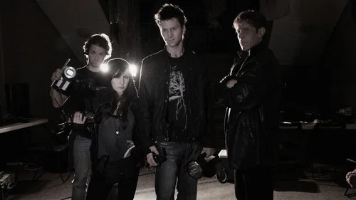
墓地邂逅 Grave Encounters
「我们把自己锁进去八个小时。」
剧情梗概
一档叫《墓地邂逅》的灵异真人秀，主持人兰斯·普雷斯顿带着摄影师、通灵师和一车器材，把自己反锁进废弃的科林伍德精神病院待一整夜。前几个小时什么都没有发生，于是他们开始造假：挪动道具、伪造声音、假装被吓到。然后他们发现，有一样东西不是他们做的。
亮点
- 由「恶毒兄弟」（科林·米尼汉与斯图尔特·奥尔蒂斯）自编自导自剪，这是他们的长片处女作。
- 拍摄地是加拿大一间真的废弃精神病院；剧组在里面连续拍了十几个夜班，大部分场景靠头灯与红外摄影机打光。
- 全片的结构就是一档真人秀：有节目片头、有采访、有「上集回顾」，甚至有片尾字幕——这套形式感是它最聪明的地方。
- 兰斯这个角色写得比同类片的主持人复杂：他从第一分钟就在演，所以你没法判断他哪一句是真话。
- 麦肯兹·格雷演的通灵师休斯顿·格雷是全片第一个察觉不对的人，也是第一个要走的人。
- 豆瓣 6.8 / 烂番茄 67%（仅 15 条影评，样本极少，已在卡片里标星号）/ Metacritic 33 / IMDb 6.1：本期专业评价最低的一部，但它在恐怖片观众里的口碑一直很高。
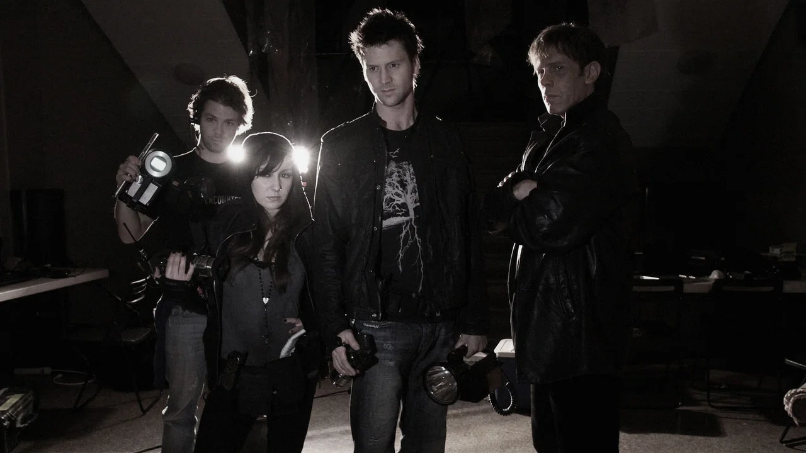
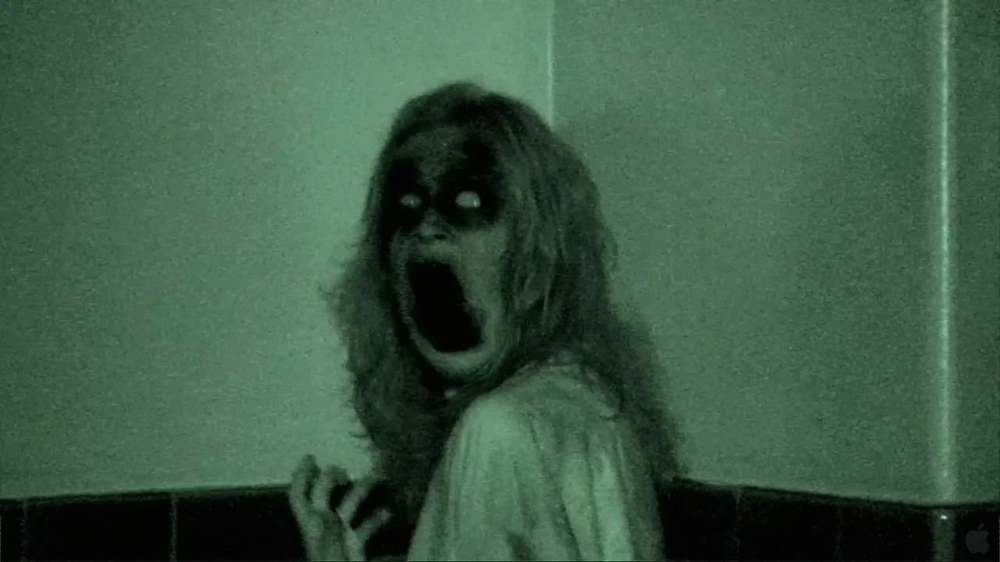
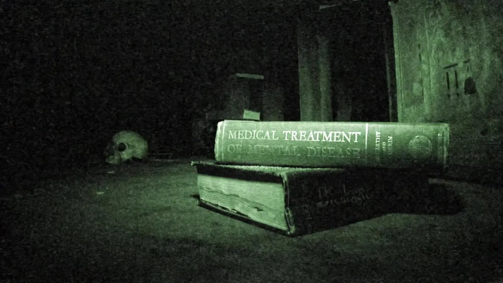
导演与主创 · 他们的历史作品
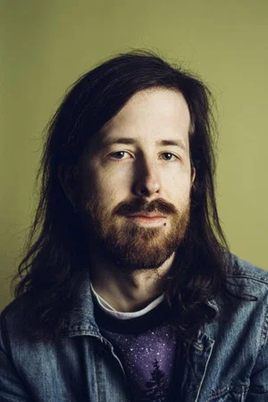
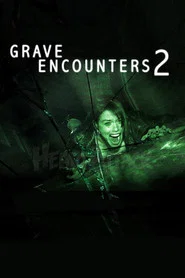
墓地邂逅2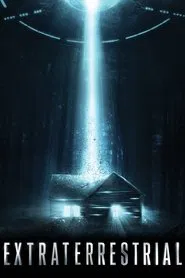
外星人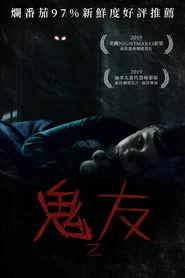
臆想魔友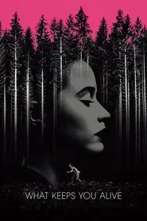
蜜谋逃杀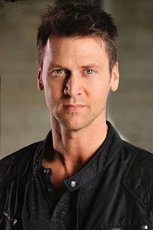
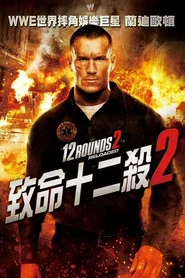
12回合2：重装上阵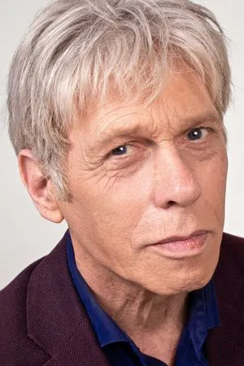
 超人：钢铁之躯
超人：钢铁之躯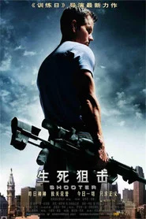
生死狙击 魔兽
魔兽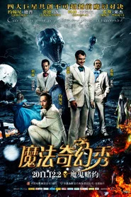
魔法奇幻秀短评（轻微剧透）
轻微剧透：真正的转折不在鬼出现，在他们意识到「造假」这件事本身已经被利用——前面他们自己布置的那些机关，后来全都变成了真的。轻微剧透：这部片把真人秀做成了一个道德装置：一个靠骗人吃饭的节目组，最后被困在自己编的那套规则里。结尾那段穿过走廊、楼梯与病房的长镜头是它最花心思的地方，也是它被记住的原因。
为什么值得一看
想看「低成本恐怖片能把一个空间玩到什么程度」的人；能接受手持镜头晃、人物扁平、逻辑经不起推敲的观众。含惊吓与血腥画面，建议高中以上观看。内地未映。看完想继续：《灵动：鬼影实录》《昆池岩》《墓地邂逅2》。
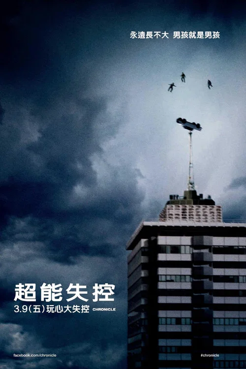
超能失控 Chronicle
「别拍了。」——「我一直都在拍。」
剧情梗概
安德鲁是个在学校里不说话的人，家里有个酗酒暴力的父亲和一个正在病重的母亲。他随身带着一台摄影机，把它当挡箭牌。表哥马特拉他去派对，派对上有人提到树林里有个洞。三个人钻进去，出来之后他们能隔空移动东西。他们约法三章：不用来害人、不用来对付彼此、不在别人面前用。安德鲁第一个违反。
亮点
- 乔什·特兰克的长片处女作，拍完时 27 岁；剧本由马克斯·兰迪斯写，灵感来自《魔女嘉莉》《阿基拉》与《第九区》。
- 成本约 1200 万美元，全球票房约 1.27 亿美元；因为这部片的成绩，他随后被选中去执导《新神奇四侠》。
- 全片由安德鲁的摄影机、马特的摄影机，以及街头监控与手机画面拼成——「谁在拍」这件事本身就是情节。
- 戴恩·德哈恩出演时 25 岁，演安德鲁；他的表演几乎全靠机器的视角完成：观众看到的画面，就是他决定让别人看到的画面。
- 迈克尔·B·乔丹演史蒂夫，是三人里唯一一个始终在踩刹车的人；他后来凭《奎迪》系列与《黑豹》成名。
- 豆瓣 7.0 / 烂番茄 85% / Metacritic 69 / IMDb 7.0：本期四个平台最一致的一部，也是本期豆瓣并列最高。
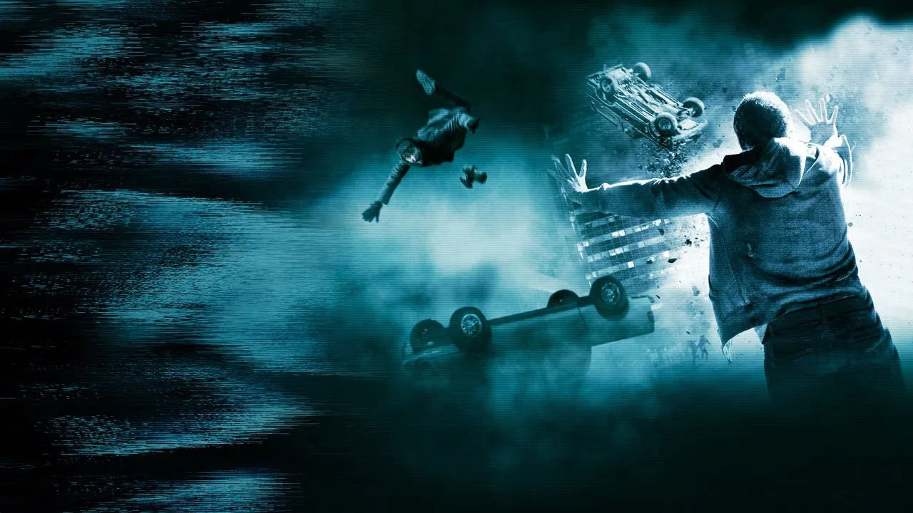
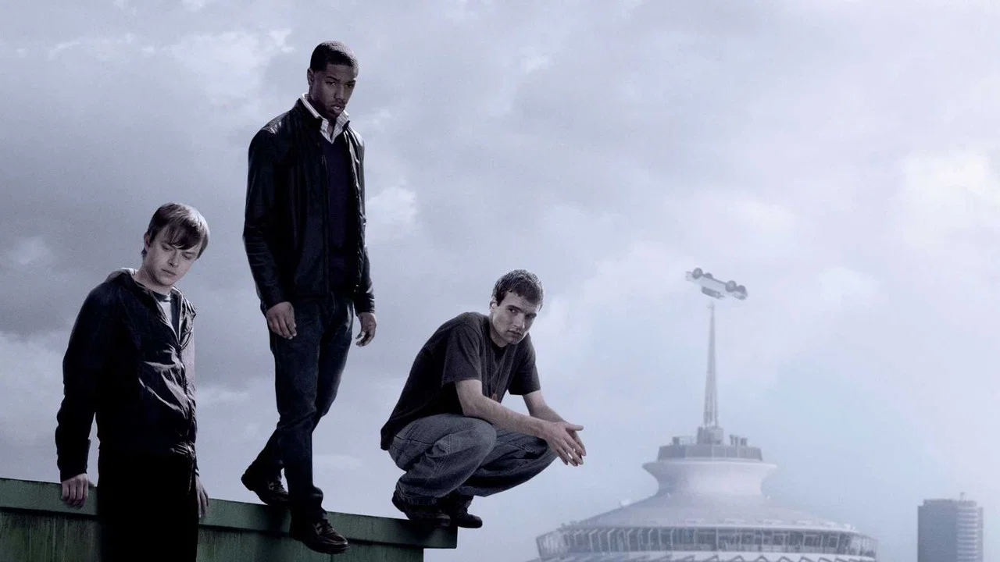
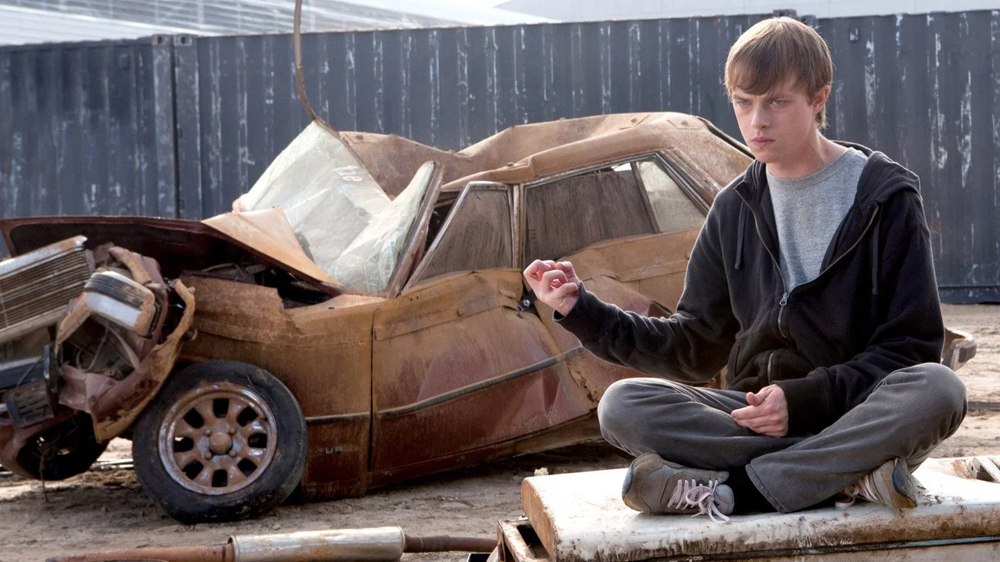
导演与主创 · 他们的历史作品
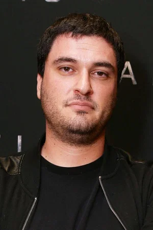
 神奇四侠
神奇四侠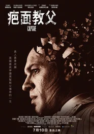
卡彭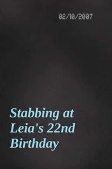
莉亚二十二岁生日上的刺杀事件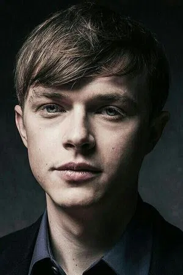
 星际特工：千星之城
星际特工：千星之城 救命解药
救命解药 超凡蜘蛛侠2
超凡蜘蛛侠2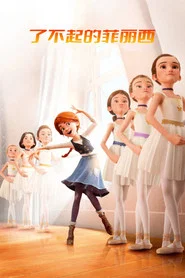
了不起的菲丽西
 黑豹
黑豹 奎迪
奎迪 奎迪：英雄再起
奎迪：英雄再起 罪人
罪人短评（轻微剧透）
轻微剧透：真正的转折在安德鲁第一次把摄影机放下——到那时你才反应过来，前面那些「随手拍」的画面不是风格，是他唯一愿意和人说话的方式。轻微剧透：这部片把超能力拍成了青春期的一个放大器：他没有变坏，他只是终于有了能赢的手段。结尾那段从空中俯拍的镜头，是全片唯一一次把视角从他手里拿走。
为什么值得一看
想看「超能力片被拍成家庭剧」的人；能接受手持镜头晃、中段人物行为会让人生气、83 分钟节奏偏快的观众。PG-13，含暴力与受伤画面，建议初中以上观看。内地未映。看完想继续：《第九区》《阿基拉》《升级》。
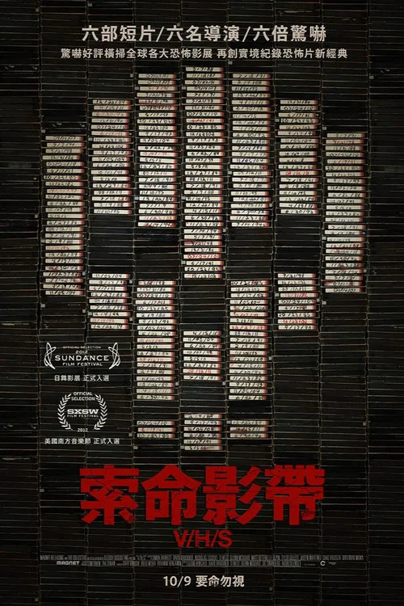
致命录像带 V/H/S
「这屋里有一柜子带子。我们要的只是其中一盘。」
剧情梗概
一伙小混混受雇闯进一栋空屋，要偷一盘录像带。屋里只有一具坐在电视机前的老人尸体，和一柜子没人整理的带子。他们一台一台放下去，每放一盘，画面就变成另一个故事：三个男人带了两个女孩回汽车旅馆、一对夫妻在公路旅行中被闯入、隔着视频通话看见自己背后有人、一栋闹鬼的房子。放完之后，轮到他们自己。
亮点
- 由恐怖媒体 Bloody Disgusting 发起的合集片：六段短片分给六组人拍，框架故事「Tape 56」由亚当·温加德导演、西蒙·巴雷特编剧。
- 参与的人后来各自成名：提·威斯特（《X》系列）、大卫·布鲁克纳（《夜间小屋》）、Radio Silence（《准备好了没》《惊声尖叫5》）。第 37 期推过的《准备好了没》正是 Radio Silence 导的。
- 成本极低，由木兰花影业旗下的 Magnet Releasing 发行；北美小范围上映加点播，全球票房约 190 万美元，之后做成了系列。
- 汉娜·菲尔曼演的那段《Amateur Night》是全片口碑最好的一段：一台藏在眼镜上的针孔摄影机，拍了一整晚。
- 乔·斯旺伯格演并导的那段《Second Honeymoon》全靠一台放在房间角落的固定机位——它是最安静、也最难受的一段。
- 豆瓣 6.7 / 烂番茄 56% / Metacritic 54 / IMDb 5.8：专业评价中下，但它在恐怖片观众里的地位远高于分数。
导演与主创 · 他们的历史作品

 哥斯拉大战金刚
哥斯拉大战金刚 哥斯拉大战金刚2：帝国崛起
哥斯拉大战金刚2：帝国崛起 死亡笔记
死亡笔记 你是下一个
你是下一个短评（轻微剧透）
轻微剧透：真正的转折不在任何一段里，而在框架故事：那伙人放完所有带子之后才发现，这栋屋里的电视机数量，和带子的数量对得上。轻微剧透：这部片真正做的事情，是把「伪纪录片」拆成六个不同的技术版本——针孔、固定机位、视频通话、家用摄像机，每一段都在换一套规则，所以你根本来不及适应。结尾那个没收尾的收尾，是这类合集片一贯的坏习惯，也是它能一直拍下去的原因。
为什么值得一看
想看「同一个手法能被玩出几种花样」的人；能接受六段水准参差、部分段落口味极重、116 分钟里有明显注水的观众。R 级，含裸露、血腥与暴力画面，建议高中以上观看。内地未映。看完想继续：《致命录像带94》《准备好了没》《昆池岩》。
欧罗巴报告 Europa Report
「我们已经失去和地球的通讯。任务继续。」
剧情梗概
六名宇航员被派往木卫二——木星那颗冰壳下可能有液态海洋、也可能有生命的卫星。飞船进入深空后与地球失联。影片由事后回看的方式展开：舱内固定机位、头盔摄像机、着陆器的记录画面，一段一段拼出这趟任务到底发生了什么，以及它为什么没有回来。
亮点
- 厄瓜多尔导演塞巴斯蒂安·科尔德罗，此前在拉美拍了三部西班牙语长片；《欧罗巴报告》是他第一次拍英语片，也是第一次做科幻。
- 剧本由菲利普·盖拉特写；制作方参考了 NASA 与喷气推进实验室的公开数据，木卫二的地表形态按真实测绘图建模。
- 全片由舱内固定机位、头盔摄像机与舱外摄影机拍成；失重靠吊威亚与平衡球实拍，进水那场用的是三分之一比例模型。
- 吴彦祖演指挥官威廉·徐，是主演名单里唯一的华人脸孔；他大部分时间戴着头盔、在对讲里说话。
- 天体物理学家尼尔·德格拉塞·泰森以本人身份出镜（作为受访者），不是客串角色。
- 全球票房仅约 12.6 万美元（几乎全靠点播）；2013 年锡切斯电影节最佳影片提名、2014 年布莱伯里奖提名。豆瓣 6.9 / 烂番茄 81% / Metacritic 68 / IMDb 6.4：本期专业评价第二高。
导演与主创 · 他们的历史作品
 狂怒
狂怒 攻壳机动队
攻壳机动队 永生守卫
永生守卫 古墓丽影：源起之战
古墓丽影：源起之战 全球风暴魔兽
全球风暴魔兽 追忆迷局
追忆迷局短评（轻微剧透）
轻微剧透：真正的转折在他们决定继续往下钻的那一刻——前面所有的损失都已经是沉没成本，而他们选择把剩下的资源押在那一个可能上。轻微剧透：这部片把伪纪录片用在了最不适合它的地方：太空里没有人拿着摄影机，所以它只能靠舱内固定机位和记录影像，结果反而比手持更冷。结尾那几秒画面是全片唯一一次给到活的东西，科尔德罗在这里收得非常干净。
为什么值得一看
想看「硬科幻怎么把孤独拍出来」的人；能接受节奏慢、几乎没有人物冲突、90 分钟里大部分是技术动作的观众。PG-13，含受伤与死亡画面，建议初中以上观看。内地未映。看完想继续：《月球》《地心引力》《降临》。
解除好友 Unfriended
「这个账号属于一年前自杀的那个人。」
剧情梗概
劳拉·巴恩斯自杀一周年那晚，六个高中同学在一个视频群聊里闲聊。群里多了一个没有画面的账号，退不掉、踢不走，账号属于劳拉。它开始一个一个翻出他们没说出口的事：谁上传了那段视频、谁在私信里叫她去死、谁说自己当时不在场。每翻出一个，就少一个人。
亮点
- 格鲁吉亚裔导演列万·加布里亚泽的长片处女作；制片是《守夜人》《通缉令》的提莫·贝克曼贝托夫，与布伦屋的杰森·布伦。
- 成本约 100 万美元，全球票房约 6400 万美元——2015 年回报率最高的恐怖片之一。
- 全片只发生在一块电脑屏幕上：视频窗口、社交网站、聊天记录、搜索页。没有一处「摄影机」，叙事全靠鼠标和窗口。
- 雪莱·亨尼格演布莱尔，是全片唯一一直在做选择的人；饰演劳拉的海瑟·索思曼几乎只以一张静态头像出现。
- 影片 2014 年在加拿大奇幻电影节首映时名为《Cybernatural》，2015 年由环球影业改名《Unfriended》公映。
- 豆瓣 6.5 / 烂番茄 62% / Metacritic 59 / IMDb 5.6：专业与观众评价都一般，但形式被反复模仿。
导演与主创 · 他们的历史作品
短评（轻微剧透）
轻微剧透：真正的转折在「谁上传了那段视频」——答案指向的不是最刻薄的那个人，而是最想被大家喜欢的那个人。轻微剧透：这部片把恐怖片的「凶手」换成了一套机制：在这个房间里，说真话的代价是死，不说的代价也是死，所以它其实是一部关于网络暴力的道德剧。结尾镜头从屏幕里退到屏幕外，是全片唯一一次提醒你：你也在同一个房间里。
为什么值得一看
想看「一块电脑桌面怎么撑起 83 分钟」的人；能接受人物讨厌、死亡设计夸张、恐怖桥段重复的观众。R 级，含自杀与惊吓画面，心理承受力弱的慎看。内地未映。看完想继续：《网络谜踪》《解除好友2：暗网》《昆池岩》。
硬核亨利 Hardcore Henry
「你不记得我。我是你妻子。」
剧情梗概
一个男人醒来，腿是假的、脸还没装好，身边的人告诉他：你叫亨利，你妻子被一个能隔空控物的疯子带走了。他身上装的东西让他能跑能打，但不让他记事。全片就是他从醒过来到结束的这一天，一镜到底的主观视角——你看到的就是他的眼睛，没有剪开的喘息，也没有一个能看到他脸的镜头。
亮点
- 俄罗斯导演伊利亚·奈舒勒自编自导，改编自他自己乐队的那支短片《Bad Motherfucker》；全片用固定在头部的运动相机拍摄。
- 成本约 200 万美元，全球票房约 1680 万美元；2015 年多伦多电影节「午夜疯狂」单元首映并获奖。
- 沙尔托·科普雷演吉米——一个不断死掉、又不断换一副身体回来的人；他是全片唯一有台词、有性格的角色。他也出演了本期的《欧罗巴报告》。
- 蒂姆·罗斯演亨利的父亲，全片只有一场戏，却是唯一一段不带打斗的。
- 全片 96 分钟没有一个客观的第三人称镜头，摄影机的每一次撞击、跌落、翻滚都是真人跑出来的。
- 豆瓣 7.7 / 烂番茄 51% / Metacritic 51 / IMDb 6.7：本期落差第二大的一部，豆瓣比烂番茄高出 26 个百分点——华语观众当爽片看，欧美影评嫌它没有故事。
导演与主创 · 他们的历史作品

 超能查派
超能查派 沉睡魔咒
沉睡魔咒 极乐空间
极乐空间 火车上的女孩
火车上的女孩 伸冤人
伸冤人短评（轻微剧透）
轻微剧透：真正的转折在吉米第二次出现——到那时你才明白，亨利不是唯一一个被改造过的人，而改造这件事本身就是那个疯子的生意。轻微剧透：这部片不太像电影，更像一段第一人称的游戏录像，而它很清楚这一点：它把「看不清发生了什么」变成了节奏的一部分。结尾那段从楼上一直摔到地面的长镜头，是全片唯一一次让你意识到这个人有多疼。
为什么值得一看
想看「动作片还能怎么拍」的人；能接受几乎没有剧情、角色是工具人、摇晃画面会引起眩晕的观众。R 级，含大量暴力与血腥画面，晕动症患者慎看。内地未映。看完想继续：《升级》《第九区》《杀死比尔》。
中邪 The Possessed
「你们俩别说话，跟在我后面。」
剧情梗概
两个大学生要拍一部关于农村算命的纪录片，跟着一位神婆和她丈夫进了一处偏远山庄，要拍一场「还人」——给活着的人驱邪。房东一家人客气得不太对劲，院子里有纸人，屋里有不该打开的门。两个学生继续拍，因为这是他们要的素材；等他们意识到该停的时候，摄影机已经停不下来了。
亮点
- 马凯自编自导自剪，此前在横店做了五年群众演员；全组 11 个人，其中演员 6 个，都是他在横店认识的群演。
- 拍摄成本约 7 万元（其中 2 万元是男主角摔伤后的医药费），拍摄周期 17 天；男主角董天文在拍结尾奔跑戏时跌下山坡摔断了腰，结尾是导演临时改的。
- 2016 年在第十届 FIRST 青年电影展首映，拿到最佳艺术探索奖，此后被称为「近二十年最好的国产恐怖片」。
- 2016 年腾讯影业买下版权并补拍重剪，院线版从 110 分钟剪到 97 分钟；原定 2018-04-04 上映，上映前三天以「技术原因」撤档，至今没有公映。
- 全片用手持摄影机拍成，形式直接借鉴《女巫布莱尔》与《灵动：鬼影实录》，素材却是本地的：还人、纸扎、神婆、驱邪。
- 豆瓣 7.0（约 2 万人评价），好于 81% 的恐怖片：本期唯一一部没有海外评分的电影，也是本期争议最小的一部。
导演与主创 · 他们的历史作品
短评（轻微剧透）
轻微剧透：真正的转折在两个学生终于承认自己一直在「要素材」——前面所有的犹豫都被这一句话解释了：他们不是被骗进去的，是他们自己不肯走。轻微剧透：马凯最狠的一处不是鬼，是那间屋子里的日常：吃饭、劝酒、说客气话，越客气越不对。结尾那段手持长镜头一路跑进黑暗里，是全片唯一一次把这个形式反过来用——它让你分不清自己是在看，还是在逃。
为什么值得一看
想看「国产恐怖片能到什么程度」的人；能接受画面粗糙、表演生涩、方言需要字幕、结局仓促（导演因男主受伤临时改的）的观众。含惊吓与民俗恐怖画面，建议高中以上观看。内地未公映，目前只能通过影展录像与非官方渠道看到，请支持正版。看完想继续：《女巫布莱尔》《灵动：鬼影实录》《咒》。
灵媒 The Medium
「巴扬神选中了她。或者没有。」
剧情梗概
泰国伊桑地区。一个摄制组去拍一位灵媒尼姆——她供奉巴扬神，替人驱邪。她的外甥女敏开始出现异状：说脏话、自残、夜里跑出去、身上出现不属于她的伤。尼姆按老规矩一层层查下去，越查越不对：附在敏身上的不是巴扬神，而那个东西可能已经跟了这个家族好几代人。
亮点
- 泰国导演班庄·比辛达拿刚（《鬼影》《鬼夫》），这是他第一次拍伪纪录片，也是第一次与韩国团队合作。
- 韩国导演罗泓轸出任制片与联合编剧——第 36 期的《追击者》与第 37 期的《黄海》都是他导的；本片为韩泰合拍，由 GDH 559 与 Showbox 出品。
- 全片是摄制组视角的伪纪录片，随着拍摄失控一路滑向混乱；班庄刻意保留了大量「采访」和「等待」的段落。
- 萨尼·乌托玛演尼姆，是全片唯一一个始终相信自己在做对的事的人，凭此片拿到多个亚洲电影奖项的提名。
- 纳瑞拉·库尔蒙科尔佩特演敏，是全片最难受的角色——她要在同一个镜头里演「本人」和「不是本人」。这是她的第一部长片主演。
- 全球票房约 883 万美元（其中韩国约 725 万美元），2021 年在富川国际奇幻电影节首映。豆瓣 6.4 / 烂番茄 79% / IMDb 6.5：本期华语观众评分最低，但烂番茄 79% 是本期第二高。
导演与主创 · 他们的历史作品
短评（轻微剧透）
轻微剧透：真正的转折在尼姆自己被否定的那一刻——她供奉了一辈子的那位神，可能从头到尾没有选中过她。轻微剧透：这部片把「附身」拍成了一笔代际的债：不是某个人做了什么，是这一家人一直没还完。结尾摄影机掉在地上却没有停止运转、拍下角色视野之外的画面，是这部片最明确的立场——它讲的不是鬼，是信仰塌掉之后剩下什么。
为什么值得一看
想看「民俗恐怖能做到多脏多狠」的人；能接受节奏偏慢、131 分钟较长、部分画面会引起不适的观众。含自残、动物伤害与身体恐怖画面，心理承受力弱的慎看。内地未映。看完想继续：《哭声》《鬼影》《昆池岩》。